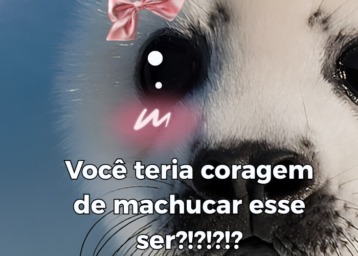

Foca-monge-havaiana enfrenta risco de extinção e mobiliza esforços de conservação
A foca-monge-havaiana (Neomonachus schauinslandi), uma das espécies de mamíferos marinhos mais raras do planeta, continua ameaçada de extinção. Encontrada exclusivamente no arquipélago do Havaí, a espécie desperta a atenção de cientistas e ambientalistas devido à redução de sua população ao longo das últimas décadas.
A perda de habitat, a poluição dos oceanos, a captura acidental em redes de pesca, a escassez de alimentos e os impactos das mudanças climáticas são alguns dos principais fatores que colocam sua sobrevivência em risco.
A foca-monge-havaiana possui um corpo robusto e hidrodinâmico, adaptado para a vida no mar. Os adultos podem medir entre 2 e 2,3 metros de comprimento e pesar de 170 a 270 quilos. Sua pelagem varia entre tons de cinza e marrom-acinzentado, enquanto a região do ventre é mais clara. Os filhotes nascem com uma pelagem preta e macia, que é substituída por uma coloração mais clara após algumas semanas. Além disso, a espécie possui grandes olhos escuros e nadadeiras fortes, que facilitam a natação e a busca por alimento.
Sua alimentação é bastante variada e inclui peixes, lulas, polvos, crustáceos e outros pequenos animais marinhos encontrados próximos aos recifes de coral e ao fundo do oceano. Excelente mergulhadora, a foca-monge-havaiana consegue permanecer vários minutos debaixo d'água enquanto procura alimento. Apesar de passar grande parte da vida no mar, costuma descansar, tomar sol e dar à luz em praias de areia e pequenas ilhas protegidas.
Especialistas alertam que a diminuição do número de indivíduos pode comprometer o equilíbrio do ecossistema marinho da região. Como predadora, a espécie ajuda a controlar populações de diversos animais marinhos, contribuindo para manter a biodiversidade dos oceanos. A redução de sua população pode provocar desequilíbrios na cadeia alimentar, afetando outras espécies que compartilham o mesmo habitat.
Outro motivo de preocupação é a sobrevivência dos filhotes. Muitos não conseguem atingir a fase adulta devido à falta de alimento, aos ataques de tubarões e ao contato com resíduos plásticos, linhas de pesca e outros materiais descartados no mar. Em alguns casos, esses animais ficam presos em redes ou ingerem lixo, sofrendo ferimentos graves que dificultam sua alimentação e locomoção.
Para evitar o desaparecimento da espécie, organizações ambientais e autoridades havaianas realizam diversas ações de conservação. Entre elas estão o monitoramento constante das populações, o resgate e tratamento de animais feridos, a proteção das praias utilizadas para reprodução e descanso, além de programas de pesquisa para acompanhar a saúde e o comportamento desses mamíferos. Também são promovidas campanhas de conscientização para orientar moradores e turistas sobre a importância de manter distância dos animais e preservar o ambiente em que vivem.
Graças a esses esforços, a população da foca-monge-havaiana apresentou uma recuperação lenta nos últimos anos. No entanto, os pesquisadores afirmam que a espécie ainda permanece vulnerável e depende de medidas contínuas de proteção para garantir sua sobrevivência. A colaboração entre governos, cientistas e a população é considerada essencial para reduzir os impactos causados pelas atividades humanas.
A preservação da foca-monge-havaiana representa muito mais do que salvar uma única espécie. Ela contribui para a conservação dos ecossistemas marinhos do Havaí e demonstra a importância de proteger a biodiversidade do planeta. Especialistas reforçam que atitudes como reduzir a poluição dos oceanos, descartar corretamente o lixo, evitar a pesca ilegal e respeitar as áreas de preservação ambiental podem fazer a diferença para garantir um futuro mais seguro para esse raro e importante mamífero marinho.

Focas do Ártico e o crescente risco de extinção.
Focas do Ártico enfrentam futuro incerto com a perda acelerada do gelo marinho